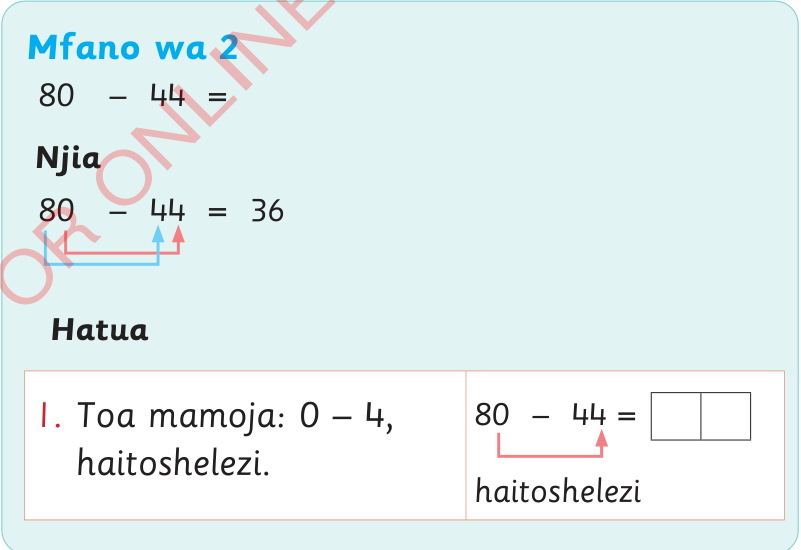

mamoja 10. Yamebaki makumi 1. Jumlisha mamoja, 10 + 3 = 13.
1
13
23
– 19 =
3.
Toa mamoja: 13 – 9 = 4.
Andika 4 katika nafasi ya mamoja.
1
13
23
– 19 =
4
4.
Toa makumi: 1 – 1 = 0.
Acha nafasi wazi katika makumi.
Kwa hiyo, jawabu ni 4.
1
13
23
– 19 =
4
